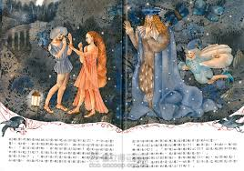
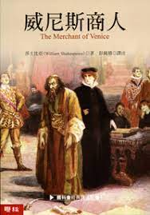

第一卷（浪漫喜劇卷一）
莎士比亞的生平 一個輪廓 方平 莎士比亞時代的舞台和觀眾 方平 錯盡錯絕（The Comedy of Errors） 方平 譯 馴悍記（The Taming of the Shrew） 方平 譯 維羅納二紳士（The Two Gentlemen of Verona） 阮 譯 愛的徒勞（Love』s Labour』s Lost） 方平 譯

第二卷（浪漫喜劇卷二）
仲夏夜之夢（A Midsummer Night』s Dream） 方平 譯 捕風捉影（Much Ado About Nothing） 方平 譯 溫莎的風流娘兒們（The Merry Wives of Windsor） 方平 譯 第十二夜（Twelfth Night；or, What You Will） 方平 譯